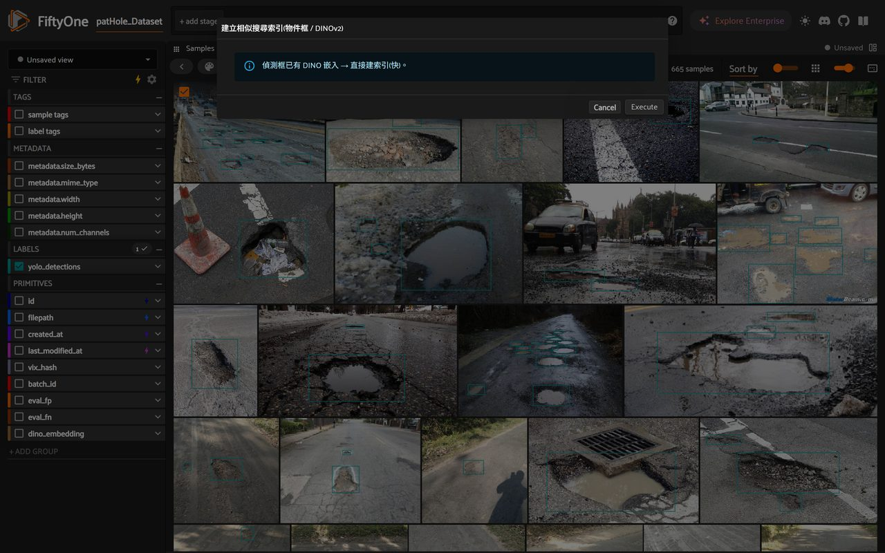
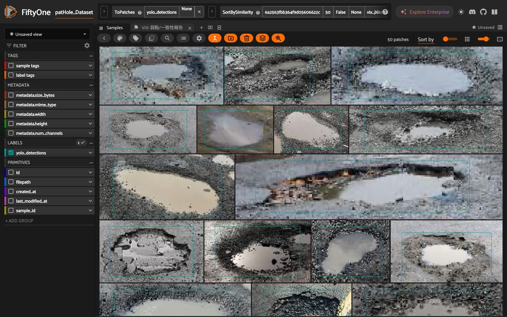

找相似的物件 (DINO)
選一個框 → 放大鏡 → 全資料集按物件相似度重排。離線、免 FiftyOne Enterprise。
Tier B 在 App 裡點 Similarity Search 看到「Upgrade to FiftyOne Enterprise」?那個內建面板是付費功能、而且不吃你的 DINO。不要用它。 改用 VIX 自己的 🔎 找相似物件 按鈕 —— 它用你已算好的 DINOv2 物件嵌入,做物件級相似(找長得像的瑕疵,不是只找像的整張背景),完全離線、不需 Enterprise、不需外部向量資料庫。
關鍵:比的是「框裡的物件」,不是「整張圖」
相似度準不準,取決於你拿什麼去比:
| 比較對象 | 找到的是 | 對找瑕疵 |
|---|---|---|
| 整張圖(scene-level) | 構圖 / 光線 / 路面像的照片 | 會被背景主導 → 較不準 |
| 物件框(object-level,VIX 用這個) | 那個缺陷本身長得像的 | 找相似瑕疵 / 找漏標 / 找重複 → 準 |
VIX 對每個框的裁切區算 DINOv2 嵌入,索引就建在這些物件向量上(patches_field),所以「相似」= 物件相似。底層用 sklearn 精確最近鄰(exact NN),不是近似 —— 排序就是真正的 cosine 最近鄰。
① 建立索引(一次)
App 裡(最省事):格狀檢視工具列點 🔎 VIX: 建立相似搜尋索引 按鈕(或按 ` 搜 build_similarity)。框還沒有 DINO 嵌入時,它會先離線算一次;之後重點按也只會更新索引。
自動偵測加速硬體:算嵌入前 VIX 會自動偵測並使用最快的裝置 —— CUDA(NVIDIA)→ MPS(Apple)→ CPU,並印出用了哪個(例:「偵測到 NVIDIA GPU → 使用 cuda 加速」)。有 GPU 時很快;純 CPU 整個資料集可能數分鐘(每框約零點幾秒)。要強制指定可設環境變數
VIX_DINOV2_DEVICE=cuda|mps|cpu。CLI 等價:
vix similarity # 對每個框算 DINOv2 嵌入(若還沒) + 建立物件框相似索引
② 用:選一張圖 → 「找相似物件」按鈕
不要用內建的「Similarity Search」面板(+ 開的那個)—— 那是 FiftyOne Enterprise 付費功能,會叫你升級,且不吃你的 DINO。請改用 VIX 自己的按鈕,它走你剛建立的 DINO 索引、完全離線。
- 到 Samples 分頁,選一張有框的影像(格狀檢視點該圖左上角的勾選圈;或在展開的單張圖裡選一個 label,就會用那一個框當查詢)。
- 點工具列的 🔎 VIX: 找相似物件 按鈕。
- App 立刻切到「該物件的相似排序」檢視(檢視列會出現
ToPatches+SortBySimilarity,最像的排最前面)。很適合:同一種瑕疵一次撈齊、找你可能漏標的同類、找重複。要還原就清掉檢視列的階段。

SortBySimilarity … vix_patch_sim,全離線、用 VIX 的 DINOv2 物件嵌入,沒有任何 Enterprise 升級提示。誠實邊界
需要嵌入:這是 Tier B 功能,要算 DINOv2 物件嵌入(第一次會下載一次權重)。Tier-A 的
像素 fallback 不適合:
這不是分類器:相似排序是「看起來多像」的排序工具,不對誰是同一類下結論 —— 由你看圖判斷。
vix diagnose 不算嵌入,所以用這個前要先建索引。像素 fallback 不適合:
--adapter memory 的像素嵌入只夠測試;真要找相似請用真 DINOv2(同 標籤稽核)。這不是分類器:相似排序是「看起來多像」的排序工具,不對誰是同一類下結論 —— 由你看圖判斷。
你現在能:在 App 裡選一個瑕疵框、一鍵把「長得像它的」全撈到最前面 —— 用的是你自己的 DINO 嵌入,完全離線。